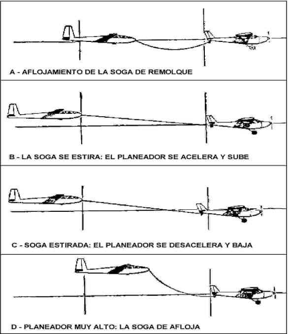

CURSO TEÓRICO
DE
PILOTO DE PLANEADOR
[ Arriba ] [ 1ª Sección ] [ 2ª Sección ] [ 3ª Sección ] [ 4ª Sección ] [ 5ª Sección ] [ 6ª Sección ] [ 7ª Sección ] [ 8ª Sección ] [ 9ª Sección ] [ 10ª Sección ] [ 11ª Sección ] [ 12ª Sección ] [ 13ª Sección ] [ 14ª Sección ] [ 15ª Sección ]
12ª Sección: CONTROL DE LAS OSCILACIONES, INESTABILIDAD DINÁMICA, DESVÍO LATERAL, TURBULENCIA, REMOLQUE NIVELADO Y DESCENDENTE.
CONTROL DE LAS OSCILACIONES
Uno de los
más desconcertantes problemas durante el remolque por avión es una oscilación en
velocidad y posición, con la sensación ocasional de sufrir una aceleración como la de
una honda al arrojar una piedra. 
Generalmente el piloto del planeador nota que la línea
(cuerda) se aflojó. Posteriormente la estira; su máquina acelera y trepa; el avión
reduce su velocidad dejando de ascender y su aeronave parece estar cada vez más alto
sobre la posición deseada. Entonces baja la nariz para colocarse en situación correcta y
el encogimiento de la soga se repite. Cuando el avión aumenta su velocidad la
aceleración se produce de nuevo. A menos que en este momento se aplique la debida
corrección, estas oscilaciones serán progresivamente mayores, especialmente si la
cuerda empleada es de nylon (mucho más elástica que la de cáñamo). Figuras 7 A, B, C y
D.
Figura Nº 7 – Oscilaciones en remolque
La
solución al problema es proporcionar resistencia al avance en el momento preciso evitando
levantar o bajar excesivamente la nariz para cambiar la velocidad relativa de ambas
aeronaves. El momento adecuado para añadir la resistencia mediante un deslizamiento (si
se está alto), o una patinada (si se está a la altura correcta), o aplicando spoilers,
es cuando la línea comienza a encogerse o cuando la aceleración recién toma el
planeador. Mantener esta resistencia hasta que la oscilación se haya anulado; luego
recobrar continuando con la corrección si fuera necesario para descender al nivel del
avión.
Nota: El
problema de oscilación es menos notable con líneas de remolque cortas.
INESTABILIDAD DINAMICA DE CABECEO DE ALTA FRECUENCIA
Esta
condición resulta de un frecuente cabeceo ocasionado por las condiciones aerodinámicas
del planeador y es diferente a las oscilaciones tratadas precedentemente.
Para reducir sus efectos el remolque debe hacerse a la
menor velocidad posible. Si durante la maniobra el planeador asciende demasiado sobre el
avión, deberá accionarse el sistema de desprendimiento o se producirá una continua
oscilación de alta frecuencia.
Nota: No deberá intentarse controlar esta
tendencia ya que es posible que el piloto entre en fase con ella amplificándola en lugar
de amortiguarla o anularla.
CONTROL DE DESVIO LATERAL
Quienes no
tienen experiencia en vuelo en formación a veces muestran dificultad en mantener una
posición constante y se desvían en uno y
otro sentido. Esta es una forma de sobrecontrol causada por demora en reconocer el error,
seguida por una corrección excesiva en sentido opuesto (muy pronunciada o mantenida
demasiado tiempo). Si el piloto del planeador trata de mantener su ubicación a lo largo
de la proyección del eje longitudinal del avión, tanto en remolque recto como en los
virajes, no experimentará mayores dificultades. Para ello tendrá que realizar pequeñas
correcciones en sentido opuesto, justamente antes de llegar a la posición correcta para
evitar sobrepasarse.
TURBULENCIA
Cuando ambas aeronaves vuelan juntas
en turbulencia, esta afectará más notablemente al planeador debido a su relativamente
baja carga alar. Por lo tanto se moverá más seguido y en mayor proporción que el avión
haciendo difícil mantener las posiciones correctas.
Una corriente vertical que afecta al remolcador, tomará
al planeador uno tres segundos más tarde si la velocidad de remolque es de 96 km/h (60
mph) con una línea de 75 m (250 pies).
El piloto del último tiene dos alternativas: esperar
hasta que los efectos se produzcan antes de adoptar alguna medida correctiva o reducir el
desplazamiento aparente entre ambas máquinas para contrarrestar los efectos de la
turbulencia cuando en realidad lo toma.
Con el primer método cuando el avión entre en la
ascendente o descendente el planeador aguarda simplemente a su vez el mismo efecto, aún
cuando se aliste a contrarrestar únicamente el desplazamiento extra que le producirá a
su máquina, a fin de mantenerse en posición adecuada. Si se emplea, deberá distinguirse
entre ascendentes o descendentes o los efectos de ascenso o descenso por parte del avión
remolcador. Esto es bastante difícil de lograr.
En el segundo método el planeador vuela en formación con
el avión, siguiendo su dirección de desplazamiento tan pronto como este se mueve
evitando ser "despedido" de su posición normal: preparándose para aplicar una
presión más enérgica en contra de la ráfaga que lo perturba.
Si permite que su aeronave gane excesiva altura, la picada
para reducirla ocasionará un considerable aflojamiento en la soga. Por ello esta técnica
no se aplicará.
En cambio iniciará un deslizamiento hacia adelante
aplicando timón de dirección en un sentido y alerón hacia el otro para reducir la altura aumentando la resistencia
al avance.
El uso de spoilers o frenos de picada reducirán ambos -altura y aflojamiento-, y pueden ser empleados en una
situación dificultosa o de emergencia.
REMOLQUE NIVELADO
Comúnmente
se emplea durante vuelos de navegación. Para pasar de una actitud de ascenso a la de
vuelo nivelado en remolque, no bastará con bajar la proa del avión como se hace
normalmente ya que ello producirá un aumento de la velocidad.
El cambio de actitud se realizará reduciendo gradualmente
el motor, lo que a su vez disminuirá la velocidad de avance y detendrá el ascenso. Con
ello se obtendrá el cambio de posición del avión.
Su piloto conocerá perfectamente las velocidades
establecidas por el fabricante tanto para el vuelo ascendente como el nivelado y en
especial las limitaciones establecidas para la operación con viento arrachado o
turbulencias, a fin de no sobrepasarlas.
REMOLQUE DESCENDENTE
Generalmente
se realiza al completar vuelos de navegación y es una variante del que se ejecuta en
ascenso o nivelado.
Para lograrlo se reducirá el motor a fin de conseguir una
disminución de la velocidad y el cambio de la actitud en el avión hasta lograr una
trayectoria descendente estable.
Como los ángulos de descenso son diferentes para ambas
aeronaves, el del planeador se evidenciará de inmediato tendiendo a aumentar su velocidad
y a sobrepasar al avión (el planeador se colocará en posición de remolque excesivamente
alta). Para evitarlo, la maniobra será tendida a fin de no incrementar la velocidad, lo
que obligaría a un desprendimiento forzoso por las razones expresadas precedentemente.
El piloto remolcador observará, a través del espejo
retrovisor, el desarrollo de la operación a efectos de adoptar de inmediato las medidas
correctivas a su alcance.
Por su parte, el del planeador aplicará los spoilers o
frenos de picada o cruzará los comandos, provocando un deslizamiento para mantener tensa
la línea de remolque o estirarla si se hubiera aflojado.
Una vez normalizada la tensión, el piloto del avión reducirá aún más su motor para
disminuir la velocidad y obtener la actitud deseada.
Volver Arriba